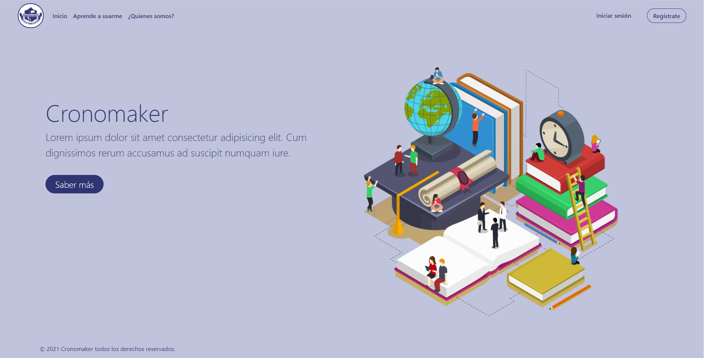
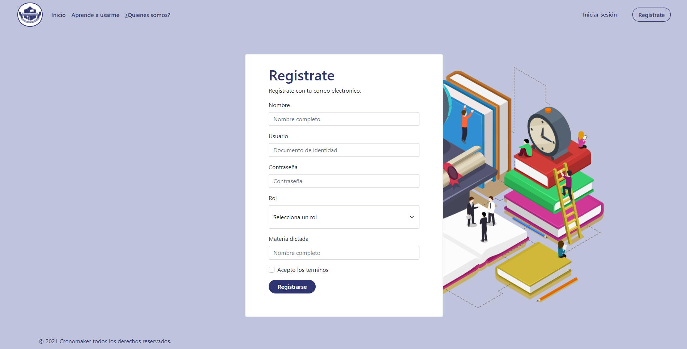
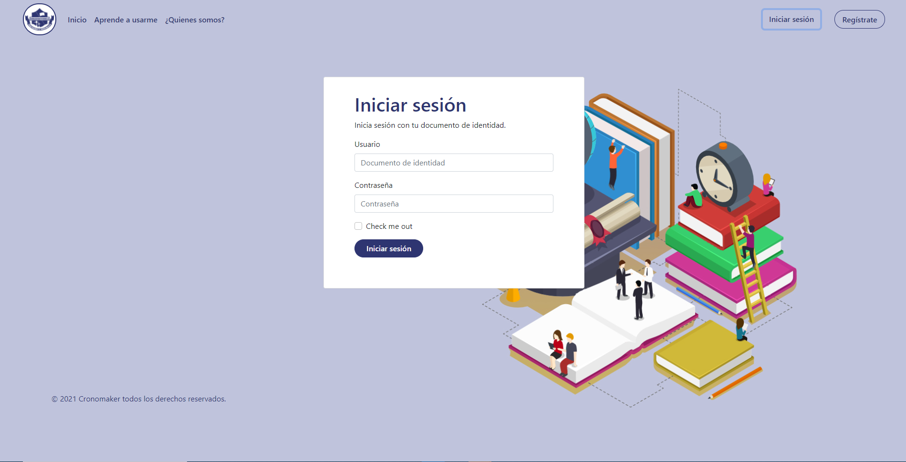

<div class="main main-aprende-usarme">
    <div class="container-xxl">
        <div class="row">
            <div class="col-xs-12 col-sm-12 col-md-4">
                <article class="mt-5 mb-5">
                    <div class="card">
                        <div class="card-body">
                            <div class="card-title">
                                <h1 class="fs-1">
                                    Bienvenido al manual de
                                    Cronomaker
                                </h1>
                            </div>
                            <div class="card-text">
                                <p class="fs-3">
                                    A continuacion te mostraremos como usar Cronomaker.
                                </p>
                            </div>
                        </div>
                    </div>
                </article>
            </div>
            <div class="col-xs-12 col-sm-12 col-md-8 col-tutorial">
                <div id="carouselExampleFade" class="carousel slide carousel-fade" data-bs-ride="carousel">
                    <div class="carousel-inner">
                        <div class="carousel-item active">
                            
                            <div class="carousel-caption d-none d-md-block">
                                <h5 class="text-left">1 Registrate o logueate</h5>
                                <p class="mt-2">Para empezar a usar la herramienta Cronomaker, primero debemos registrar una cuenta.</p>
                                <p>Diríjase a la sección de registrarse que se encuentra en la barra de inicio.<br>
                                A continuación aparecerá un formulario que se deberá completar en su totalidad para poder registrarse dentro de
                                Cronomaker.
                                </p>
                            </div>
                        </div>
                        <div class="carousel-item">
                            
                            <div class="carousel-caption d-none d-md-block">
                                <h5 class="text-left">2 Registro</h5>
                                <p class="mt-2">Cada uno de estos datos se mantendrá, de forma confidencial.</br>
                                Por ultimo solo debes enviar el formulario y tendrás una cuenta registrada en Cronomaker.</p>
                            </div>
                        </div>
                        <div class="carousel-item">
                            
                            <div class="carousel-caption d-none d-md-block">
                                <h5 class="text-left">3 Login</h5>
                                <p class="mt-2">Ahora cada vez que salgas de Cronomaker, solo tendrás que seleccionar el 'Iniciar Sesión'.<br>
                                Y podrás entrar en tu cuenta con solo dos de tus datos para verificar que esta el dueño de esta cuenta.</p>
                            </div>
                        </div>
                    </div>
                    <button class="carousel-control-prev" type="button" data-bs-target="#carouselExampleFade" data-bs-slide="prev">
                        <span class="carousel-control-prev-icon" aria-hidden="true"></span>
                        <span class="visually-hidden">Previous</span>
                    </button>
                    <button class="carousel-control-next" type="button" data-bs-target="#carouselExampleFade" data-bs-slide="next">
                        <span class="carousel-control-next-icon" aria-hidden="true"></span>
                        <span class="visually-hidden">Next</span>
                    </button>
                </div>
            </div>
        </div>
    </div>
</div>